Tamanho da fonte
Reconhecer paradigmas de programação de acordo com as demandas da aplicação
Vamos iniciar os estudos
PlayQual estilo ou gênero se encaixaria melhor para a proposta apresentada a Ana?
Nesta Unidade de Estudo vamos conhecer um pouco sobre os primeiros consoles, tipos de jogos e gerações de games. Será uma verdadeira viagem no tempo, em que poderemos acompanhar a evolução desse fabuloso mundo dos Jogos Digitais, por isso te convido a mergulhar e se encanatar por essa história junto comigo.
Você sabia que nos primórdios dos jogos eletrônicos, na década de 1950, as produções eram baseadas em interfaces de texto ou gráficos muito simples, que tinham por objetivo apenas testar e demonstrar teorias relacionadas às áreas como a interação humano-computador e estratégia militar? Pois é, em seu princípio, os games estavam longe da indústria do entretenimento.
Em 1955, o exército dos EUA lançou um jogo para simular uma guerra com a União Soviética na Europa, denominado Hutspiel.
Na década de 1960, o Instituto de Tecnologia de Massachusetts - MIT nos EUA dispunha do computador mais moderno da época, o TX-0.
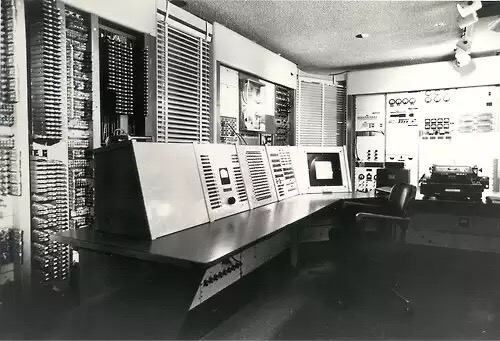Você consegue se imaginar operando essa máquina enorme? Quem diria que o computador evoluiria tanto para as máquinas que temos acesso atualmente, não é mesmo?
Bem… continuando a nossa história, o TX - 0 atraiu estudantes e pesquisadores, que começaram a desenvolver ferramentas de programação e pequenos jogos.
Incrível não é mesmo? Ver o início de tudo, mas não para por aí, O MIT substituiu o seu TX-0 por um minicomputador chamado PDP-1, mais veloz e com um monitor de resolução 512 X 512.

Viu só a evolução? Imagine na época! O avanço de computador atraiu um cientista chamado Steve Russell que, junto à sua equipe criou o primeiro jogo de tiro: o Spacewar. Esse jogo foi o primeiro a ser distribuído e chegou a outras universidades, tornando-se, assim, um parâmetro para os pesquisadores.
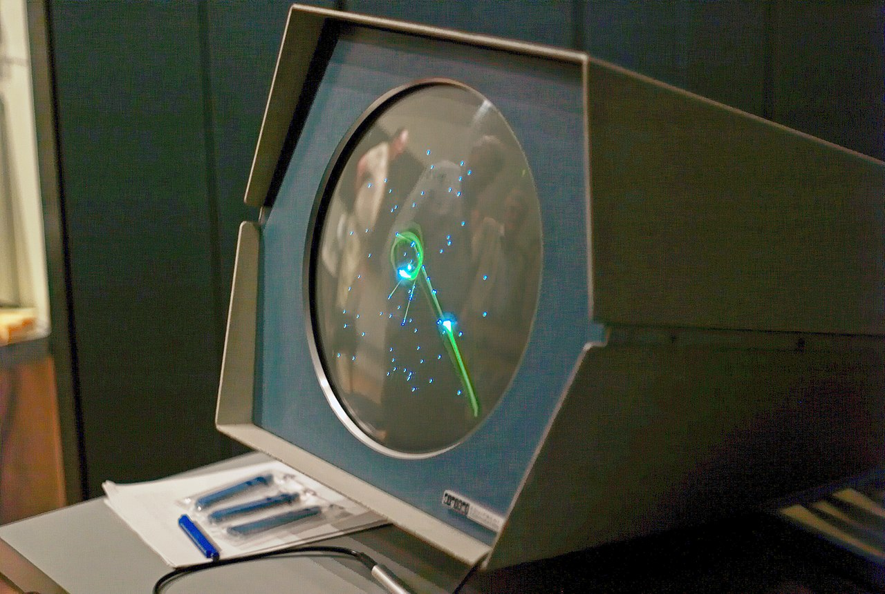Na década de 1970, Nolan Bushnell adaptou o jogo Spacewar para o estilo Arcade e criou uma máquina exclusiva para jogá-lo. O jogo e a máquina se chamavam Computer Space. A experiência foi tão bem sucedida que Nolan passou a vendê-la. Mais tarde, Nolan Bushnell fundaria a empresa Atari. Em 1972, era lançado o primeiro console de videogame da história: o Odssey.
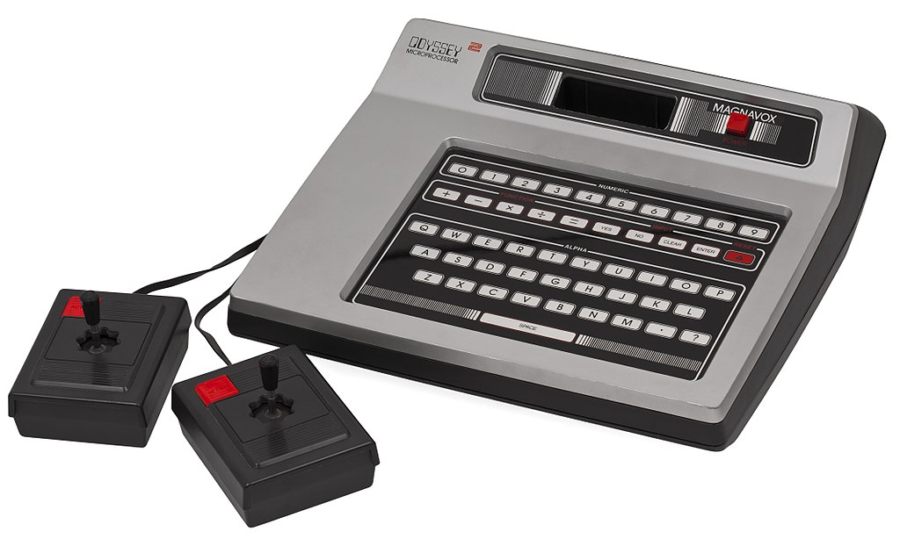A partir de 1973, com a criação da empresa Atari, os jogos começaram a se popularizar e o jogo Pong se tornou o primeiro grande sucesso da história dos games. Em 1977, é lançado o Atari 2600, o primeiro console programável com jogos em cartucho da Atari. Custava uma pequena fortuna (US$ 249,95) e chegou ao Brasil em 1983.
Em 1980, a Atari lançou o jogo Space Invaders e as vendas do 2600 explodiram. Outros consoles começaram a ser lançados, como o Intellivision. Também em 1980, a empresa japonesa Namco lança o Pac-Man, o jogo arcade de maior sucesso de todos os tempos.
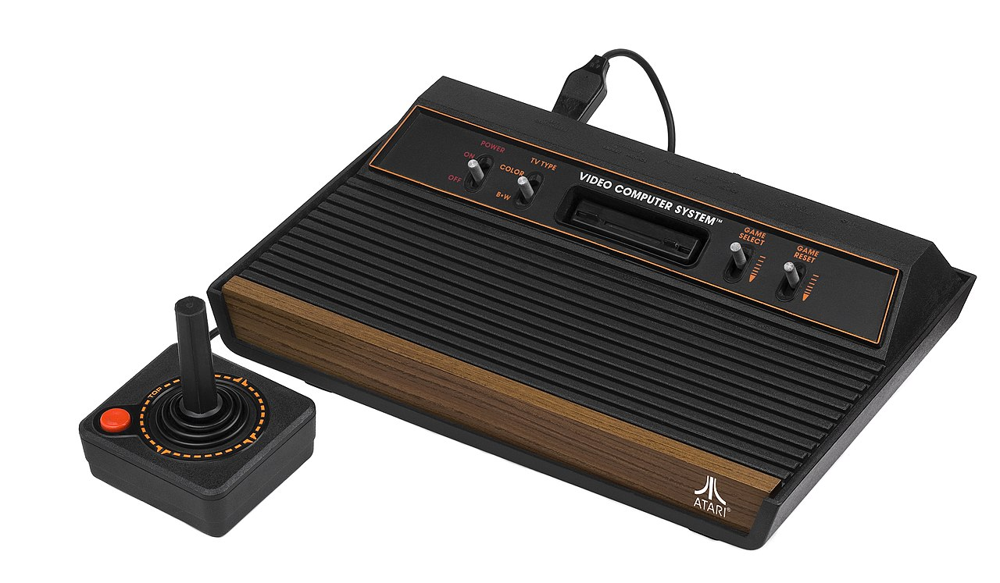Em 1981, a Nintendo publica o jogo Donkey Kong, no qual o personagem principal enfrenta o Jumpman, que ficou conhecido como Mario nos EUA e em boa parte do mundo. O sucesso foi extraordinário, tanto que Mario virou um jogo solo. Outros marcos importantes na história dos games aconteceram em 1983, quando a Atari lançou um jogo baseado no filme E.T. - O Extraterrestre e foi um fracasso (o primeiro da história) de vendas. Já em 1985, a Nintendo lança seu primeiro console (o Famicom) e o Super Mario Brothers torna-se o jogo mais vendido. Em 1986, é lançado pela Sega o console Master System, que chegaria ao Brasil em 1988. Nesse mesmo ano, a Sega lança o primeiro console 16 bits (Mega Drive) e os jogos passam a ter um melhor refinamento gráfico. Em 1990, para concorrer com o Mega Drive, a Nintendo lança seu console 16 bits, o Super NES. Em 1994, a Sony lança seu Playstation, que mudaria radicalmente a história dos videogames, com a substituição de cartuchos por CDs. Atualmente, a linha Playstation está em sua quinta geração. Por fim, em 2001 a Microsoft lança sua linha Xbox, que foi o primeiro console com HD embutido.
Continuando nossa viagem no tempo no universo dos jogos, chegou a hora de estudar as gerações dos consoles dos videogames, que podem ser divididos em 9 gerações. Vamos conhecer um pouco de cada uma:
Gêneros de games são categorias baseadas em uma combinação de tema, ambiente, apresentação/formato na tela, perspectiva do jogador e estratégias de jogo.
Os gêneros dos jogos não estão relacionados à história ou ao enredo do jogo, mas sim à forma como o game é jogado, ou seja, seu estilo. Há também o ambiente do jogo, que é a forma como a história é contada, podendo ser fantasia, terror, entre outros.
Existem diversos tipos de gêneros e ambientes de jogos. Vamos começar com os principais estilos (ou gêneros):
O gênero de ação existe desde a febre do fliperama. Assim, praticamente todos os jogos de fliperama (como Pac-Man, Asteroids e até um jogo relativamente mais lento como Pong) são jogos de ação. O objetivo da maioria dos games de ação é destruir rapidamente os inimigos, evitando, ao mesmo tempo, ser destruído. Esses games tendem a ser mais simples, porque enfatizam o tempo de reação do jogador. A simplicidade é necessária nos games de ação, porque o cérebro médio não consegue processar muitas informações adicionais em um ambiente frenético. A coordenação visomotora é necessária para dominar os games de ação, também conhecidos como jogos de reflexo, por causa dos movimentos rápidos da mão associados ao uso de joysticks e ao pressionamento rápido de botões. Existem também alguns subgêneros do estilo ação:
Fliperama são salões de jogos dedicados ao uso de máquinas do estilo pinball ou arcade.
O subgênero dos games de ação de plataforma concentra‑se na movimentação rápida dos jogadores em um ambiente, frequentemente saltando e desviando‑se de obstáculos, às vezes, coletando itens pelo caminho. Os exemplos de games de plataforma incluem alguns dos primeiros games de fliperama, como Donkey Kong e Sonic the Hedgehog, e games de console 3D mais recentes como Ratchet & Clank e Jak & Dexter. Esses games têm personagens claramente identificáveis e memoráveis (como Mario e Sonic), que frequentemente atuam como mascotes das empresas que os desenvolveram.
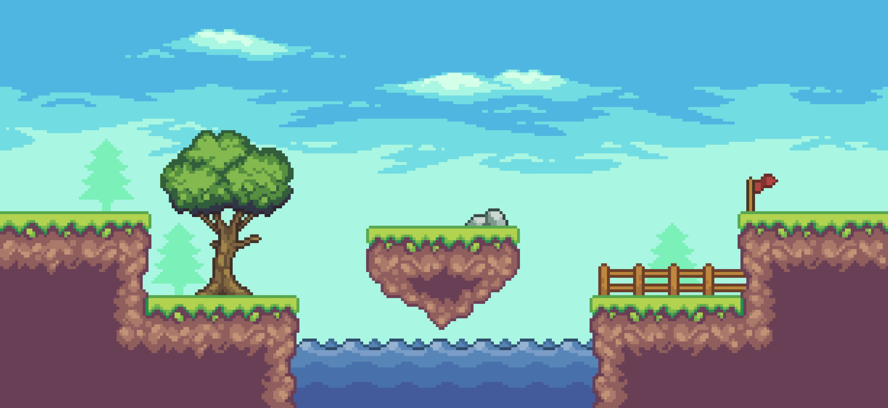Dentro do gênero de ação, o subgênero dos games de tiro concentra-se no combate entre um jogador e outros personagens do mundo do game, geralmente com armas de fogo e outras armas controladas pelas mãos do personagem. Nos games de tiro em primeira pessoa (first-person shooters ou FPS), o jogador adota a perspectiva do personagem, que não pode ver a si próprio na tela. O jogador consegue ver as armas do seu personagem e, os demais personagens do game, (normalmente uma mescla de membros da mesma equipe e adversários). A ação em um FPS, na maior parte das vezes, é percebida como mais imediata, porque a visão do jogador cria a sensação de estar presente dentro do mundo do game.

Os games de tiro em terceira pessoa (third-person shooters) permitem que o jogador veja seu próprio personagem, juntamente com o restante do mundo do game. É importante diferenciar, claramente, o personagem do jogador dos demais personagens na tela. Uma vantagem dos games de tiro em terceira pessoa é que o jogador tem uma perspectiva muito mais ampla do que em um FPS, onde a visão apenas frontal do jogador é limitada (sem nem sequer ter a visão periférica experimentada na perspectiva de primeira pessoa na vida real).

Os games do subgênero de corrida também usam a perspectiva de primeira ou de terceira pessoa. O cenário padrão abrange o veículo do jogador (geralmente um carro de corrida), competindo contra um ou mais adversários em uma ampla variedade de pistas ou terrenos. O jogador tenta dirigir à maior velocidade possível, sem perder o controle do veículo. Os games de corrida, que se enquadram no gênero de ação, costumam ser considerados jogos de corrida para fliperama, enquanto os games de corrida que fazem parte do gênero de simulação são conhecidos como simulações de veículos. Os novos sistemas de console sempre lançam um game de corrida, porque é um dos melhores gêneros para demonstrar os progressos obtidos no movimento, na resposta, nos gráficos e no desempenho geral.
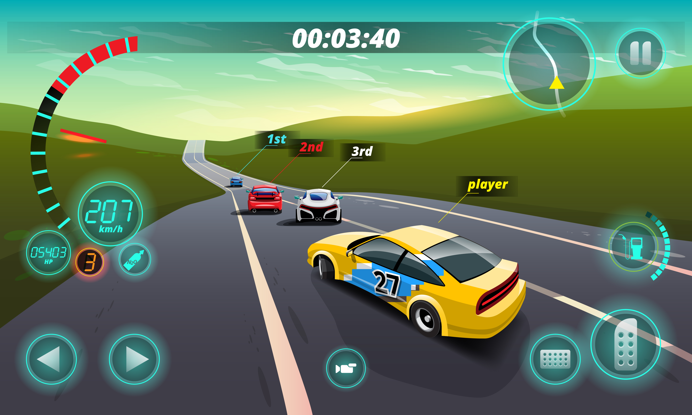Muitos títulos de luta são games para duas pessoas, em que cada jogador controla uma figura na tela e usa uma combinação de movimentos para atacar o adversário e defender‑se dos ataques. Esses games, frequentemente, são vistos de uma perspectiva lateral e cada sessão dura, em média, 90 segundos. Os movimentos combinados, que caracterizavam o subgênero de luta, foram incorporados aos games de ação de maior escala.
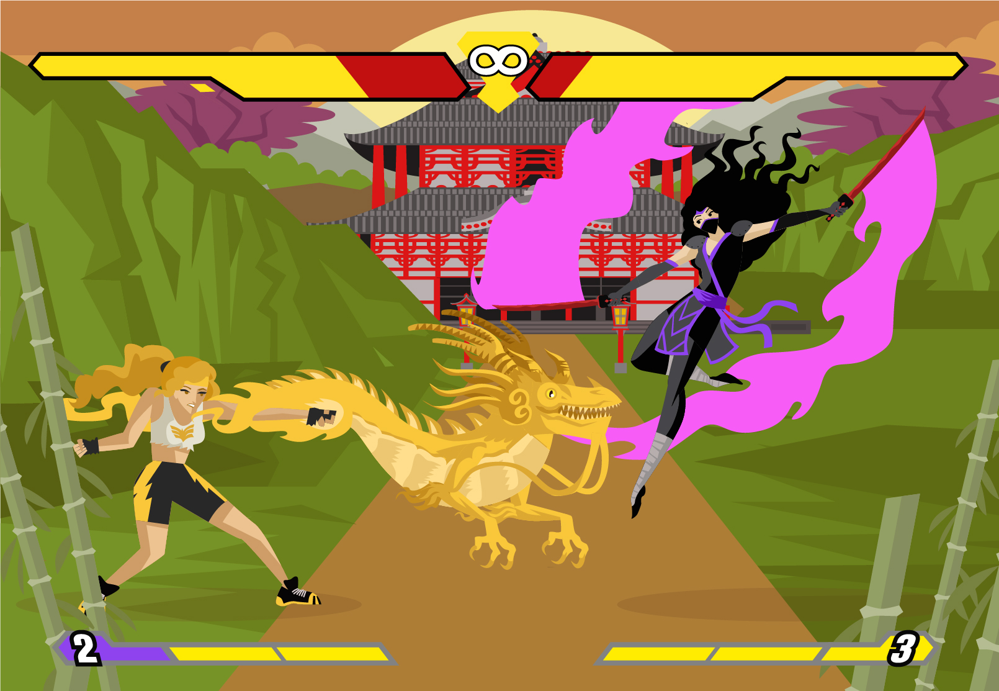As características dos games de aventura incluem exploração, coleta de itens, solução de quebra-cabeças, orientação em labirintos e decodificação de mensagens. Diferentemente dos games de ação, os games de aventura, em geral, são baseados em turnos, proporcionando ao jogador tempo para refletir.
A ideia de poder jogar novamente um game é atraente para a maioria dos jogadores. Além de, muitas vezes, proporcionar mais que o dobro de horas do game, também fornece uma perspectiva diferente de sua história (por exemplo, permitindo que o game seja jogado a partir da perspectiva de outro personagem, em um local ou em um período de tempo diferentes). Infelizmente, em geral os games de aventura são intrinsecamente “não repetíveis”, porque costumam ser formados por enigmas com uma única solução. Quando o game termina, o jogador soluciona o mistério e não há uma oportunidade de solucioná-lo novamente, de outra maneira.
O gênero de ação-aventura é o único gênero híbrido que se consolidou como um gênero distinto por seus próprios méritos. O componente de ação requer reflexos rápidos nos movimentos do personagem, para se desviar dos inimigos e combatê-los, enquanto o componente de aventura adiciona quebra-cabeças conceituais e elementos de narrativa ao game. Os aficionados dos games de aventura puros, geralmente não se interessam pelos games de ação-aventura, porque estão habituados ao ritmo mais lento dos primeiros. O híbrido de ação-aventura atraiu um novo público, além de alguns jogadores de games de ação pura.

Os games de cassino, são versões eletrônicas de jogos populares — como roleta, dados, Vinte e Um e máquinas caça-níqueis — encontrados em cassinos reais. A compulsão, como motivação, tem uma correlação estreita com os jogos de azar. Assim, muitas versões on-line, desse gênero, são controladas em sites de apostas.
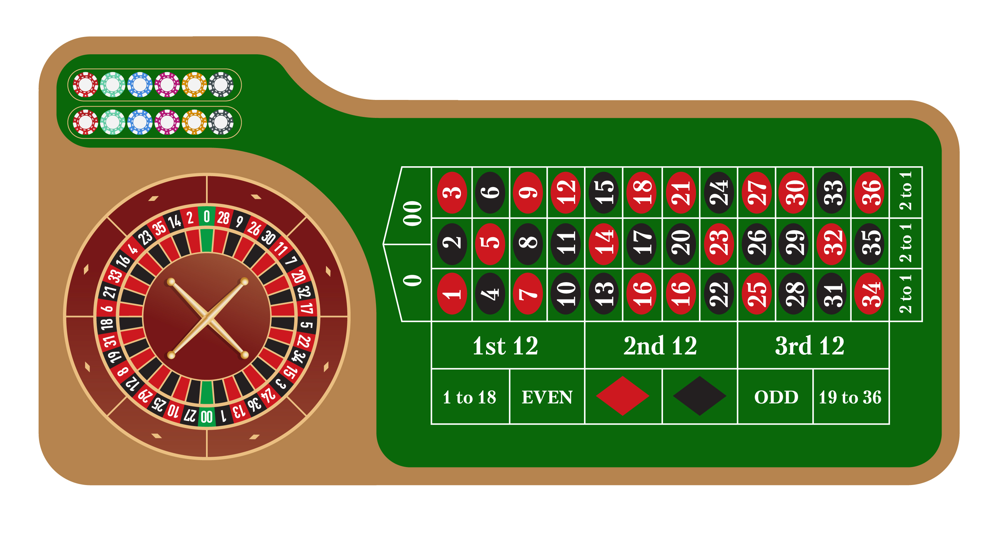Embora elementos de quebra-cabeça apareçam em muitos gêneros de games, em um game de quebra-cabeça puro, o jogador deve solucionar um problema ou uma série de problemas sem controlar um personagem. Nos games de quebra-cabeça, que podem ser em tempo real ou baseados em turnos, a narrativa é mínima ou inexistente. O game de quebra-cabeça baseado em padrões Tetris — um dos mais populares do gênero em todos os tempos — é jogado em tempo real, gerando uma experiência de jogo em ritmo acelerado. Muitos games de quebra-cabeça são temporizados, situando-se em um ponto intermediário entre os intervalos de tempo real e os baseados em turnos. Outros, como o jogo de montagem de palavras Bookworm, são baseados em turnos, concedendo ao jogador todo o tempo necessário para formar palavras a partir de letras embaralhadas.
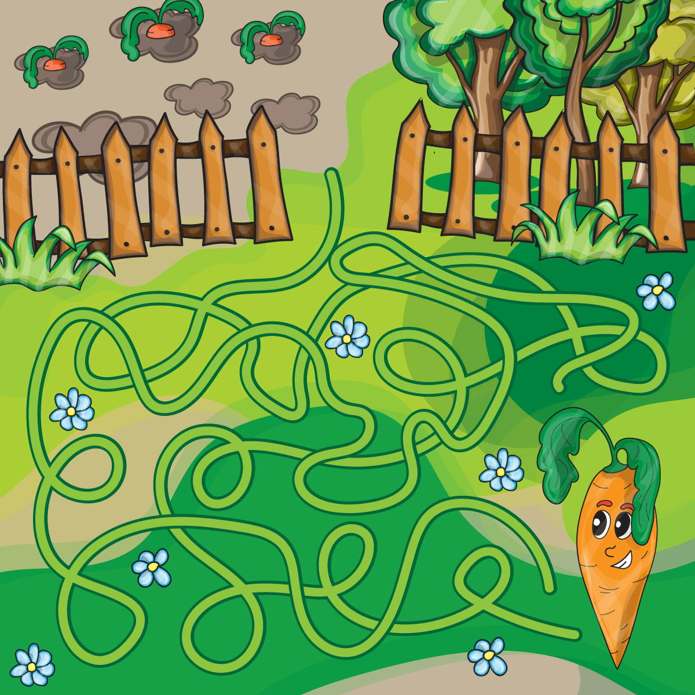Os games de representação de papéis (role-playing games ou RPG) originam-se da tradição iniciada na década de 1970, pela série de jogos de RPG Dungeons & Dragons, que eram jogados com papel e lápis. Neles, os jogadores assumiam papéis de guerreiros, magos, sacerdotes, elfos ou ladrões e exploravam calabouços, matavam monstros (como dragões e ogros) e coletavam tesouros. Um dos jogadores, o Mestre dos Calabouços (mais tarde designado Mestre do Jogo), configurava o mundo do jogo e assumia os papéis de outros personagens (não jogadores).
Assim como os games de aventura, os RPGs se caracterizam pela importância da narrativa. No entanto, eles também contêm personagens que melhoram ao longo do game. Por causa do sólido desenvolvimento emocional dos personagens — e também do fato de que a vitória está vinculada a essa evolução —, os jogadores de RPGs normalmente experimentam um forte envolvimento emocional com seus personagens. A apresentação do gênero é diversificada, variando desde games mais simples, em estilo de fliperama, como Dungeon Siege, até ambientes graficamente ricos como o de Final Fantasy. Os temas de RPGs, geralmente, são variações do tema geral de “salvar o mundo” — por exemplo, encontrar a pessoa responsável por um assassinato, resgatar alguém que foi sequestrado, destruir um objeto perigoso ou eliminar monstros.

As simulações (às vezes designadas sims) tentam reproduzir sistemas, máquinas e experiências usando regras do mundo real. Esses tipos de games incluem simulações de veículos, simulações de processos e simulações participativas. As regras associadas a todos os games de simulação são baseadas em situações e objetos do mundo real. Os jogadores, familiarizados com os temas associados a um game de simulação, frequentemente gostam de aplicar essas regras do mundo real à experiência do game.

Nas simulações de veículos, o jogador geralmente opera máquinas complicadas (na maioria das vezes, veículos como jatos de combate, navios ou tanques). O Flight Simulator, da Microsoft, foi o primeiro simulador de veículo a obter ampla aceitação popular. Em geral, esses games são altamente precisos em todos os aspectos, desde os controles do equipamento até o manual do usuário que, normalmente, é volumoso e descreve os mínimos detalhes da máquina.

As simulações de processos abrangem sistemas ou processos do mundo real. Esses games também são conhecidos como simulações de construção e administração (construction & management sims ou CMS), games de Deus ou games de brinquedos. Alguns exemplos são: Rollercoaster Tycoon, Sim City e Black & White.
Em vez de se concentrar na operação de máquinas e na compreensão de como usar seus controles, esse tipo de simulação é voltado para a manutenção regular de um sistema, que pode ser qualquer tipo de estrutura social ou econômica envolvendo pessoas, criaturas, objetos ou mundos inteiros.
Embora alguns desses games sejam ambientados em mundos de fantasia, contendo criaturas e rituais incomuns, todos duplicam as regras de sistemas socioeconômicos do mundo real. Nas simulações de processos, o objetivo não é derrotar um inimigo ou adversário, mas construir algo dentro do processo.
Esses games são considerados construtivos — envolvendo construção e criação — em vez de destrutivos. Para vencer o game, o jogador deve compreender e controlar seus processos.
As simulações de processos abrangem sistemas ou processos do mundo real. Esses games também são conhecidos como simulações de construção e administração (construction & management sims ou CMS), games de Deus ou games de brinquedos. Alguns exemplos são: Rollercoaster Tycoon, Sim City e Black & White. Em vez de se concentrar na operação de máquinas e na compreensão de como usar seus controles, esse tipo de simulação é voltado para a manutenção regular de um sistema, que pode ser qualquer tipo de estrutura social ou econômica envolvendo pessoas, criaturas, objetos ou mundos inteiros. Embora alguns desses games sejam ambientados em mundos de fantasia, contendo criaturas e rituais incomuns, todos duplicam as regras de sistemas socioeconômicos do mundo real. Nas simulações de processos, o objetivo não é derrotar um inimigo ou adversário, mas construir algo dentro do processo. Esses games são considerados construtivos — envolvendo construção e criação — em vez de destrutivos. Para vencer o game, o jogador deve compreender e controlar seus processos.

Os games de estratégia originaram-se dos jogos clássicos de tabuleiro, como o xadrez, em que os jogadores devem administrar um conjunto limitado de recursos para atingir uma meta específica. A maioria dos games de estratégia desenrola-se em um ambiente militar. Ao contrário do que acontece nos RPGs, o personagem do jogador é relativamente “desimportante”. De fato, às vezes o jogador nem tem um personagem. Em vez disso, os recursos do jogador (por exemplo, tropas e armas) tornam-se fundamentais para a experiência do game. A gestão de recursos, geralmente, inclui a construção de diversos tipos de edifícios ou unidades e a decisão sobre como e quando colocá-los em ação. A estratégia nesses games é baseada na avaliação comparativa dos recursos e decisões dos oponentes.
Até o início da década de 1990, quase todos os games de estratégia eram baseados em turnos (turn-based strategy ou TBS). Esse intervalo é particularmente apropriado para games de estratégia, porque estimula o jogador a gastar algum tempo raciocinando estrategicamente, antes de tomar decisões. Nos games de estratégia baseados em turnos, a gestão de recursos envolve decisões específicas sobre os tipos de recursos a serem criados, os locais onde serão colocados e a maneira mais vantajosa de usá-los. A possibilidade de dispor de todo o tempo necessário, para tomar essas decisões, faz parte do apelo do game.

Os games de estratégia em tempo real (real-time strategy ou RTS) incorporam um intervalo de tempo real. Embora o raciocínio estratégico não seja muito compatível com a ação em tempo real, a popularidade dos games de RTS é surpreendente. O jogador de RTS é constantemente pressionado pelos acontecimentos e não dispõe de tempo suficiente para avaliar, com detalhes, seus movimentos. Os games de RTS multijogador devem ser jogados em uma única sessão.
Outro aspecto dos games de RTS é conhecido como microgestão (micromanagement), que é o processo de equilibrar conjuntos de recursos (por exemplo, tropas). Como o game evolui rapidamente, em tempo real, um conjunto de recursos pode prosperar enquanto outros fracassam, porque não é possível ao jogador dedicar-se a todos ao mesmo tempo.
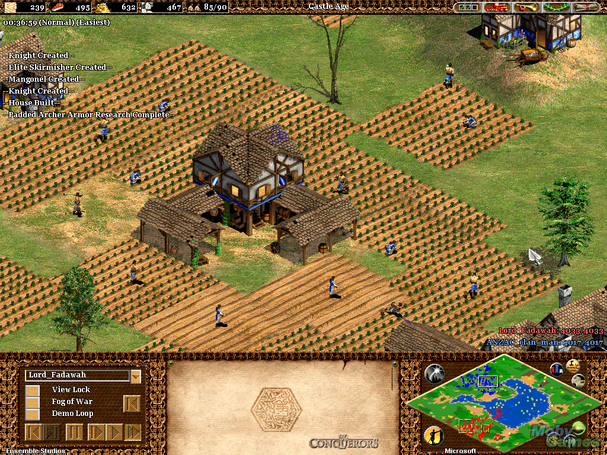Um Massively Multiplayer Online Game (MMOG ou MMO) é um jogo de computador capaz de suportar centenas ou até milhares de jogadores simultaneamente, jogando pela Internet. Os jogadores de MMOs são capazes de interagir e competir entre si, em grande escala, e várias vezes essa interação é realizada entre pessoas de todo o mundo. A maioria desses jogos pretende que o jogador gaste muitas horas no jogo. Existem alguns subtipos de MMOG:


Um jogo de cartas colecionáveis ou JCC (conhecido como TCG - Trading Card Games ou CCG - Collectible Card Games), são jogos de estratégia nos quais os participantes criam baralhos de jogo personalizados, combinando estrategicamente suas cartas com os seus objetivos. Nasceram como jogos físicos e passaram para o mundo dos videogames. Baseiam-se na construção de decks e batalhas on-line ou contra a IA.
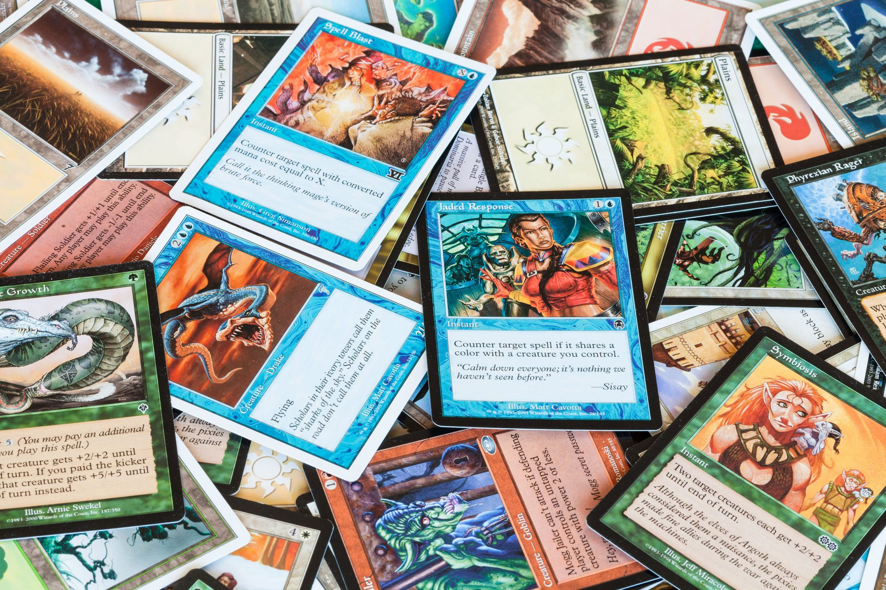Battle Royale (em tradução literal: batalha real) é um gênero de jogo eletrônico que mistura elementos de exploração, sobrevivência, procura por equipamentos e armas. Os jogos de batalha real desafiam um grande número de jogadores, começando com um equipamento mínimo, a procurar armas e armaduras e eliminar os outros oponentes, enquanto evitam ficar presos fora de uma "área segura" que encolhe com o tempo, com o vencedor sendo o último competidor a sobreviver no jogo.
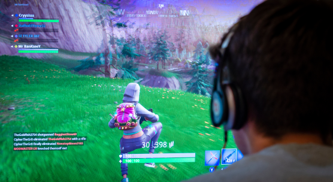Nesta UE fizemos uma incrível viagem histórica no universo dos game. No decorrer do trajeto, vimos a evolução dos games e consoles, com suas respectivas gerações e também os estilos de jogos.
Assim, com esse estudo, tenho certeza que você terá grandes ideias de como criar seu próprio jogo, adotando um desses estilos e, por que não, misturar alguns estilos, criando uma nova forma de jogar? Desejo que você tenha muita criatividade e sucesso nas jogadas de propor e construir games.

Solução do problematizando